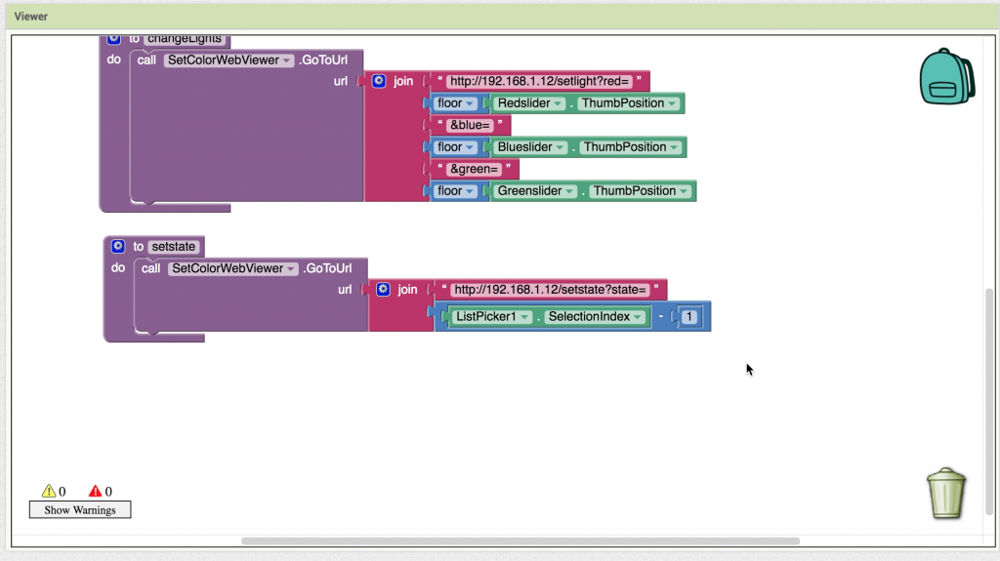

Recently I finished a cool electronics project: internet connected lights under my bed. In three steps I will guide you from project to project, each time adding functionality to what we made.
Part 1: Motion-activated lights
Whenever I wake up at night I have to walk to the end of the room to turn on the lights. Although it is only slightly inconvenient, this is something that can we can solve by having lights that are motion activated. In this recently posted blog on hackaday.io you can see other people face the same problem, and solve it in the same smart way: https://hackaday.io/project/13207-smart-bed-lighting.
Although the Hackaday project is cool, it is possible to extend the project to be more useful for us in our daily lives. In this first part I will set you up with a minimalistic design that performs the task. Next parts I will help you connect your lights to the internet and help you do cool stuff with them.
To create this project you only need a small amount of parts. I list what I bought, and where I bought it. If you want to build soon, you can spend more money and buy the components in your local shop.
The LED strip consists of three wires:
- 12V input
- Ground blue
- Ground red
- Ground green
To turn on a part of the lights connect the + of the power supply to the 12V input and the – of the power supply to the ground of one of the colours. Connecting and disconnecting the connection to the ground can also be done with an electronic switch: the transistor that we bought. To create a connection we need a small amount of power on the center pin of the transistor.
This small amount of power can be given by the motion detector. On this website we find that the sensor can operate from 5 to 20 volts (our 12 volts is perfect), and that the output of the sensor is 3.3 volts: http://henrysbench.capnfatz.com/henrys-bench/arduino-sensors-and-input/arduino-hc-sr501-motion-sensor-tutorial/ . This 3.3 volts can be put on the center pin of the transistor to trigger the lights.
Our motion triggered lights can be achieved by building this diagram:

Part 2: Adding a NodeMCU for internet control
After part 1 you were probably wondering why you could only choose 3 colours, and how you might be able to dim the lights. Dimming the light can be seen as quickly pressing the on/off button. If you press faster: more light will come out, if you press slowly: less light will come out. Our sensor only has the “on” and “off” press, so we will have to add something that regulates how fast lights are pressed.
For this project we will use a “Node MCU”: http://www.nodemcu.com/index_en.html . You can see it as a small programmable computer that you can connect to the internet over Wi-fi. Programming it is easy using the Arduino environment(which can be downloaded here: https://www.arduino.cc/en/Main/Software). How to set this up can be found on this webpage: http://www.instructables.com/id/Quick-Start-to-Nodemcu-ESP8266-on-Arduino-IDE/ . After you set up the environment we will start by creating a simple program that does the pressing for us.
If you look at the NodeMCU it has many pins. What the General Purpose Input Output (GPIO) number is of each pin can be found on this image: https://pradeepsinghblog.files.wordpress.com/2016/04/nodemcu_pins.png?w=616. In your code you set one pin to input (the one you connect the motion sensor to), and three pins to output (the ones that control the colors). If you would simply connect the output of the sensor to the NodeMCU you could get a randomly fluctuating voltage, that is why you need a pull down resistor (see https://en.wikipedia.org/wiki/Pull-up_resistor).
The complete new diagram we build looks like this:

Next up: the code to control the LED’s, and a way to set the color over the internet. I already wrote some code that does this. Please read through the code, and replace the SSID and password to match your own wifi.
If you put this code on your NodeMCU you can open the serial monitor to see the IP of your device. In my case this is 192.168.1.17. If you type this number in your browser you should see “Hello from my intelligent bed” in your browser. If you navigate to YOURIP/setstate?state=0 the lights should turn on.
What’s next? Well, there are currently three things we like to fix:
- Setting the mode and colors in a browser is terribly user-unfriendly. In part 3 we will make an app that lets you set the colors!
- The internet of things kind of dictates that we should at least let something know that we are walking past our bed.
- The bed is called “smart”, but the only thing it does is react to you. Let’s change this and react to the weather outside.
I hope you enjoyed tinkering with the components! If you have any questions, or a cool result: send me a message!
Part 3: Building an Android app
In the first two parts we tinkered with hardware and now have an internet connected device! This time we will create a user friendly interface: an Android app.
Creating a simple app is ridiculously easy nowadays. Every simple app I create is done using the MIT App inventor found here: ai2.appinventor.mit.edu/. The layout of your app is created by dragging and dropping components, and the logic is created by putting “puzzle pieces” together.
As you “code” by dragging and dropping components, sharing this “code” is difficult to do. Therefore I will show what I made, how I made it, and why I made it that way.
Start off by dragging the following things in your screen:
- Three sliders (red, green, and blue) which we use to select a colour. Make sure that their MinValue is 0, and their MaxValue is 250.
- A canvas that will display the color we selected with the sliders
- A button that, when pushed, will set the lights on our device
- A WebViewer. This component is necessary to go to a URL, just like we did in our browser in the previous part of the tutorial.
I made the width of all components equal to “Fill parent..” to look good on my phone.
{kind=link}
Speaking about phones: the best thing about the App Inventor is the possibility to immediately test your app on your phone using the companion app. Download it from the App store: https://play.google.com/store/apps/details?id=edu.mit.appinventor.aicompanion3&hl=nl .
{kind=link}
Next we will first create the color preview option. In your designer screen you added a canvas. This canvas has the option to set a background color, making it perfectly usable as a color previewer.
Although you can select many colors with the built-in functions, we want to preview the color we selected with the red, green, and blue slider. This can be done using the block “make color”.
After you create the procedure (or, function) “setCanvasColor” you call this one every time the position of the sliders changed. This will update your canvas continuously making it easy to select a color.
{kind=link}
Note that changing the color of the bed at the same time would probably be a bad idea: moving the slider from 0 to 250 would cause a lot of data packages sent to our device. That’s why we added the “SetColorButton” to our interface. After this button is clicked we will go to the URL of our device with the WebViewer. How I coded this can be seen in this image:
{kind=link}
Try our your self-made app and enjoy the fact that you just made a nice interface with your bed!
You might remember that we had 3 different modes: on, off, and motion detected. You can adjust your app to be able to set these with a “ListPicker”, an element that when clicked gives the user the choice between several items. What these items are can be selected with the “ElementsFromString” option.
The set state function works like the set color function: you navigate to a certain URL using the WebViewer. Note that the listpicker outputs numbers 1,2,3, and we expect the number 0,1,2. This means we have to substract one from the selectionIndex before sending it to our device. The final program looks like this:

Hopefully you enjoyed building your own app with the MIT App inventor. If you have any questions, feel free to leave a comment!
{kind=link}